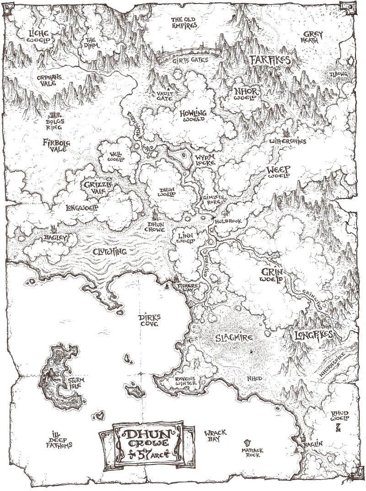
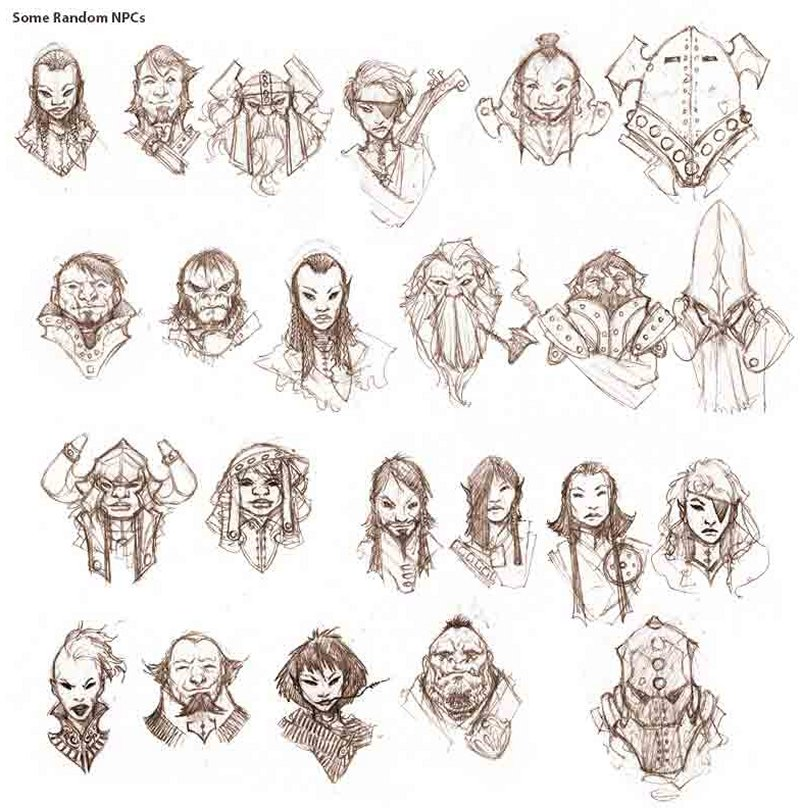

Bâtir une campagne
Quand on m’a demandé d’écrire un article sur le rôle du MD, mon esprit a été submergé d’idées : des petits mécanismes additionnels, des conseils sur la construction d'un monde, des monstres rusés et une douzaine d’autres pensées sur lesquelles j’avais écrit des notes. A la fin, j’ai pensé décrire comment je menais une partie et donner quelques conseils qui pourraient être utiles à des MD débutants. Je crée généralement toutes mes campagnes à partir de zéro, étant un bâtisseur de monde obsessionnel. Voici donc ma boite à outils basique de MD.
Réaliser une ébauche de carte
Quand je décide de lancer une partie, je commence habituellement avec un petit microcosme qui laisse de l’espace pour être développé par mes joueurs et moi-même. Je réalise une ébauche de carte, inscris quelques noms intéressants dessus, établis un point de départ pour le groupe, écris quelques idées de rencontres et débute à partir de cela. Si vous n’êtes pas doué pour réaliser des cartes, vous pouvez utiliser cette carte générique que j’ai faite. J'ai choisi la ville de Dhun Crowe comme point de départ pour les personnages, en raison de sa position centrale (peut être réaliserai-je une carte de la ville pour mon prochain article).

Idées de rencontres
Dhun Crowe étant le "domicile" des personnages, je place des rencontres de bas niveau proches de ce point central et des rencontres plus dangereuses vers les bords extérieurs de la carte. Pour le moment, ce ne sont que des notes brutes et des références à des pages du Manuel des Monstres. A ce stade, des idées précises sont plus importantes que des blocs de statistique.
Noter des accroches d’intrigues
Un MD obligeant ses joueurs à suivre un chemin linéaire est généralement désigné comme faisant du « Railroading » [mener sur des rails]. Ce n’est pas le meilleur moyen de les impliquer dans l’aventure. Au lieu de cela, dirigez vos joueurs à l’aide d’accroches d’intrigues : des rumeurs ou des mystères intéressants que vous parsemez dans le jeu. Les rumeurs de personnages non-joueurs (PNJ) sont les accroches d’intrigues les plus communes, mais vous pouvez également utiliser d'autres astuces : un parchemin contenant des prophéties secrètes, d’étranges runes gravées dans la pierre d’un obélisque, un vieux corbeau qui parle ou juste une boussole bizarre qui pointe approximativement vers le nord-ouest. La curiosité de vos joueurs sera accrue et ils suivront éventuellement ces pistes.
Exemple d’accroches d’intrigue : le Promeneur du Marais
Toutes les rumeurs n’ont pas besoin d’être précises. Par exemple, les autochtones peuvent parler de légendes à propos du « Promeneur du Marais ». Certains disent qu’il se déplace dans le silence le plus total et mange des vaches entières. D’autres clament qu’il s’agit du fantôme d’un paladin déchu ou qu’il s’agit du spectre de la Mort. Les joueurs devront se rendre dans les marécages pour découvrir eux-mêmes la vérité.
Dans ce cas, disons que le Promeneur du Marais est un troll albinos affecté par un sort de silence dans un rayon de 3 mètres autour de lui. Cette malédiction lui a été lancée par un occultiste qui voulait empêcher la créature de divulguer un secret (le troll ne sachant ni lire, ni écrire). Avec cette courte annotation, vous disposez maintenant d’une rencontre amusante et, ultérieurement, vous pourrez lancer une nouvelle accroche d’intrigue : quel secret garde le troll ? Pour trouver la réponse, les aventuriers vont devoir briser la malédiction ou trouver un autre moyen de communiquer avec le troll. Peut-être que la malédiction prend fin quand le troll meurt et qu’il révèle une partie du secret en gémissant son dernier souffle.
PNJ sous la main
Votre casting de personnages non-joueurs va nécessiter des noms. Les dictionnaires de prénoms de bébés sont parfaits pour cela, donc gardez un de ces livres sous la main ou regardez sur les sites web de prénoms de bébé. Donnez également de la diversité à vos PNJ : certains pourraient être des imbéciles, d’autres amicaux et quelques-uns bizarres ou juste fous. Donnez à chacun des motivations particulières et ajoutez des excentricités distinctives, comme un œil gauche fuyant, une barbe infestée de cafards ou un mot répété trop souvent.
PNJ improvisés
Parfois, vous devez créer des PNJ à la volée. Une situation inattendue mène à un roleplay intéressant. Voici un extrait d’une de mes parties :
Moi : Vous entendez un bruit dans les buissons
Emi : Qui est Brice ?
Moi : Brice est un nain qui erre dans les alentours et se nourrit de baies de divers buissons. Cela lui procure souvent des crises de dysenterie, donc il passe beaucoup de temps à l’extérieur.
Emi : Je salue Brice !
Moi : Brice surgit des buissons et vous salue en retour alors que votre chariot passe.
Bang – un nouveau PNJ de créé. Peut-être que Brice sera un herboriste qui aidera un personnage empoisonné dans le futur.
Voici également quelques portraits de personnages pour quand vous aurez besoin d'un PNJ à la hâte. Choisir juste un visage peut vous donner de bonnes idées pour la personnalité du personnage.

Utiliser tous les sens
C’est un vieux conseil, mais un bon conseil. Votre rôle est de décrire ce que les joueurs voient, entendent, sentent, goutent et touchent : l’éclairage lugubre de l’antre d’un dragon, la texture visqueuse d’un mur de donjon, la puanteur d'un ogre en sueur, le bruit spongieux qu'un limon vert fait tout en descendant, ou le goût infect d'une potion de guérison (comme de la tequila mélangée avec du sirop contre la toux). Il n’y a pas d'équipe d’effets spéciaux ou de studio d’animation 3D, juste vous !
Le sixième sens
En plus des cinq sens physiques, vous pouvez utiliser le sixième sens à votre avantage. Un autel dédié à un ancien dieu pourrait tout simplement paraitre "mauvais" et faire se dresser les cheveux sur la tête des personnages. Une elfe sent qu’une forêt féérique a été corrompue, "elle le sent juste au fond d'elle-même". L’astuce quand on décrit le sixième sens est de rester vague ou imprécis « Vous avez l’impression d’être observé », puis de continuer. C’est très amusant.
Écouter vos joueurs
Les types de personnages que vos joueurs créent vous disent ce qu’ils souhaiteraient qu’il se produise dans le jeu. Donc faites en sorte de lire leurs feuilles de personnages et fouillez-les à la recherche d’idées d’aventures. Par exemple, si un joueur crée un personnage de cape et d’épée qui connait tout sur la navigation, c’est certainement une bonne idée que de prévoir un voyage en mer dans votre partie.
Après chaque session de jeu, discutez avec vos joueurs de ce qu’ils ont aimé ou pas et, plus important encore, de ce qu’ils sont curieux de connaitre. Utilisez ces retours pour ajuster votre style de MD et prévoir les futures sessions. S'ils ont vraiment détesté un PNJ adversaire, c’est génial ! Vous pouvez exploiter ce personnage pour les mener sur une aventure. S’ils souhaitent poursuivre une accroche d’intrigue que vous avez semée, préparez vous pour cela. Vous disposez d’une semaine avant votre prochaine session de jeu : c'est beaucoup de temps pour élaborer des idées intrigantes et surprenantes et préparer quelques notes.
Gagner
Si vos joueurs quittent la table en vous posant des questions ou en mettant au point des stratégies pour la prochaine session,
S’ils veulent obsessionnellement contrecarrer les plans de leur adversaire dans la prochaine aventure,
S’ils sont excités à propos du prochain lieu qu’ils vont explorer,
S’ils se sentent comme s'ils avaient regardé (ou aidé à réaliser) la plus impressionnante des séries télévisées jamais créée :
Vous avez gagné !
Écrit par Richard Whitters, traduit par pouish